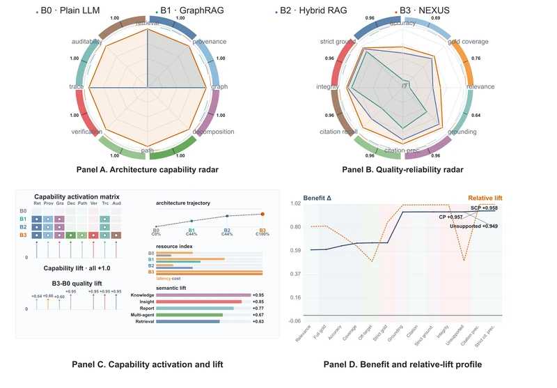
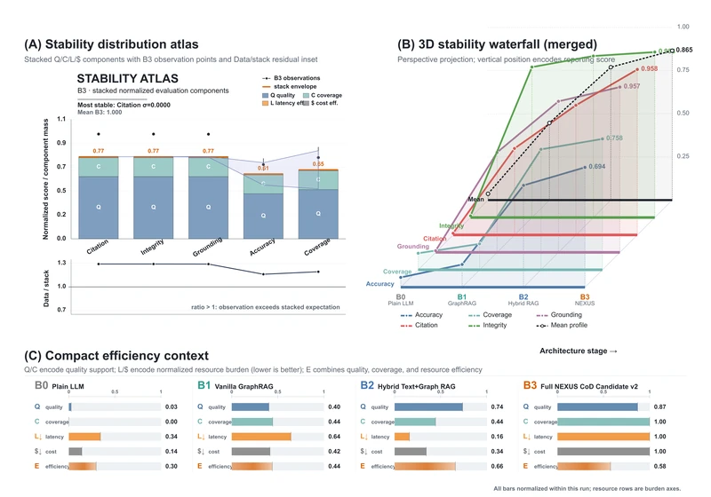

NEXUS4SCI-Mat
Evidence-Grounded Knowledge Graphs
for Refractory Materials
Li Minghao*Xin HeJiancheng An†Fuhai Li†Huaming Luo†Hao Zhang†Hongyuan Bai†
* Primary contributor to this work and manuscript.
Project team · High-throughput ASC High-temperature Multiphase Materials Project
 Beijing Normal-Hong Kong Baptist University,Zhuhai, China
Beijing Normal-Hong Kong Baptist University,Zhuhai, China- Zhongguancun Institute of Artificial Intelligence,Beijing, China
- Hong Kong Baptist University,Hong Kong, China
- Peking University,Beijing, China
- Beijing Jinyu Tongda Refractory Technologies Ltd.Beijing, China
† Project client: Beijing Jinyu Tongda Refractory Technologies Ltd.
Patent Pending Preview Release

Abstract
Scientific conclusions about refractory materials depend on experimental conditions and evidence distributed across papers, characterization results, and performance measurements. We present NEXUS4SCI-Mat, a domain-specific framework for knowledge graph construction and evidence-grounded retrieval in ASC materials research. An expert-defined ontology constrains entities and directed relations, while an immutable Base Graph and monotonic professional increments preserve established knowledge across versions. Relations retain experimental conditions and provenance rather than treating material interactions as unconditional facts. The proposed retrieval design combines material-aware query understanding, state- and budget-aware reasoning control, and complementary graph and community retrieval. Candidate evidence paths are checked for structural validity, condition compatibility, support, and conflict before answer synthesis. Multimodal discussion and expert feedback extend the research workflow, while separating candidate discoveries from authoritative knowledge. Repository evaluations examine knowledge augmentation, memory diagnostics, materials vision, and visual-evidence coverage.
Condition-Aware Knowledge & Retrieval
Preserve knowledge as it evolves. Ten entity types and ten relation types constrain extraction. Expert calibration fixes a reusable Base Graph; specialist literature contributes new knowledge through monotonic merges that preserve existing identifiers. A knowledge unit extends a triple to (h, r, t, c, p), where c records temperature, duration, atmosphere, composition, specimen state, and test method, and p records provenance. Proposed discoveries remain in a separate overlay until reviewed.
Retrieve evidence under scientific constraints. MASQ resolves materials, processes, relation directions, conditions, and performance targets into a structured query. ARGUS uses query complexity, graph structure, evidence state, and remaining budget to guide retrieval depth and single-chain or branching reasoning. OCM-DRM combines local graph paths with community-level evidence. Verification checks condition compatibility, path completeness, support, and conflict; answers distinguish source facts, grounded inference, and uncertainty.
Method terminology follows the supplied technical disclosure. The original README framework above labels the ontology-based retrieval component as OMD; the disclosure specifies the OCM-DRM design.
Experimental Results
The README reports complementary evaluations rather than a single aggregate benchmark. The following results retain the scope of the August 11, 2026 research snapshot.




| Architecture | Accuracy | Grounding | Citation recall | Latency (s) |
|---|---|---|---|---|
| B0 · Plain LLM | 0.0568 | 0.0095 | 0.0095 | 16.03 |
| B1 · GraphRAG | 0.1318 | 0.5787 | 0.5009 | 30.03 |
| B2 · Hybrid RAG | 0.5899 | 0.8746 | 0.7510 | 7.51 |
| B3 · NEXUS CoD | 0.6942 | 0.9574 | 0.9583 | 46.74 |
Two questions × four architectures; boundary-regularized descriptive estimates. These results do not establish general performance or isolated causal effects.
Memory and visual evidence. The persistent diagnostic profile scores 84.3764/100, a paired gain of +12.8355 points over the windowed profile (95% CI: +12.4905 to +13.1781); this is not a production-system memory score. The vision experiment measures response completeness, not expert-validated image accuracy. The separate 300-case Multi-Discussion run is a deterministic pipeline self-check. A full-build audit records 11,361 unique images and 39,028 KG relations; coverage alone does not establish correctness.